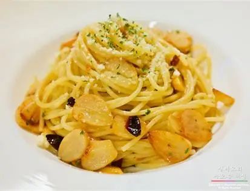

알리오 올리오
마늘과 올리브유만으로 고소하고 알싸한 맛을 낸 가장 단순한 이탈리아 파스타.

정보
재료
- 스파게티 100g
- 마늘 6쪽
- 올리브유 5큰술
- 페페론치노 3개
- 이탈리안 파슬리 조금
- 소금 조금
만드는 순서
- 마늘은 얇게 편으로 썰고 파슬리는 다진다.
- 끓는 소금물에 스파게티를 넣고 포장지 시간보다 1분 짧게 삶는다.
- 팬에 올리브유와 마늘을 넣고 약한 불에서 노릇해질 때까지 천천히 익힌다.
- 페페론치노를 부숴 넣고 면수 반 국자를 부어 섞는다.
- 삶은 면을 넣고 1~2분 섞으며 소스를 면에 입힌다.
- 파슬리를 뿌리고 올리브유를 한 번 더 둘러 낸다.
더 알아보기: Wikipedia - Spaghetti aglio e olio